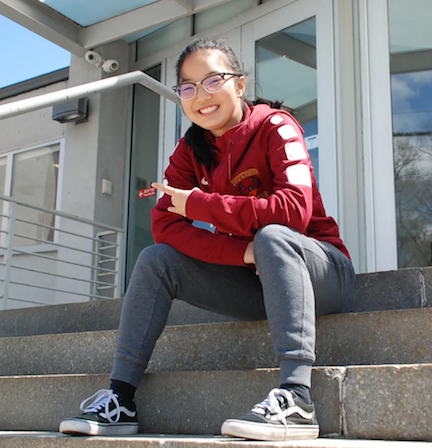
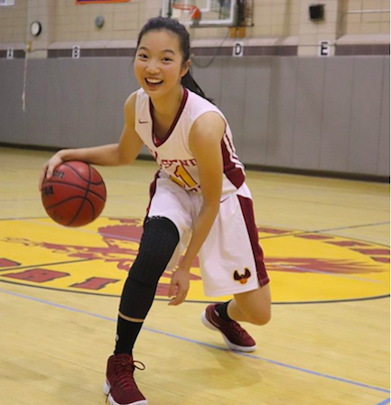
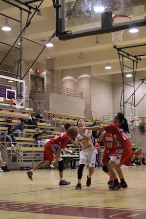
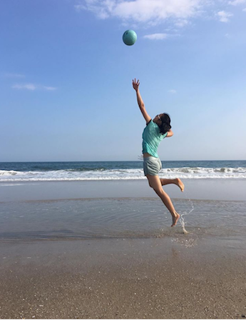
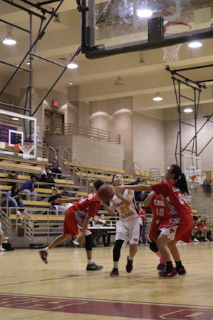
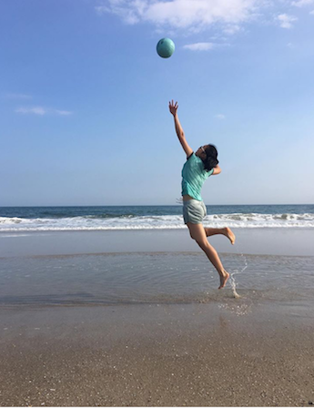
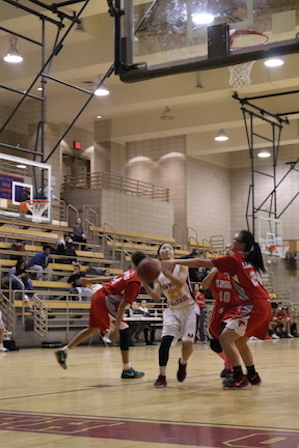
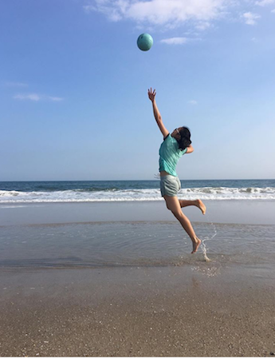

Hello!! I'm Kimberly Lau and I'm 16 years old. I play on the basketball, volleyball and flag football team at my school, Townsend Harris High School. I was first inspired to play sports at a very young age by my father. He was a certified referee in the game of basketball which sparked my interest in basketball and in sports in general. The skills that I learned from basketball carried over to other sports and from there I realized that I had a passion for sports. I would love play basketball in college. D1 bound yerrrr... just kidding :(
instagram: @lilkimlau
snapchat: @lilkimlau21
Close Game!
Bringing up the leather ball
With ten seconds on the clock
All the pressure's on
To hear the tick-tock
I pass it to my teammate
Who I set a pick for
She becomes the open man
And I run the backdoor
Because no one sees me
I openly receive the ball
I'm about to go for the shot
But then comes someone tall
It's the center from the opposing team
Blocking my view
I think of a strategy
And here's what comes through
I fake to my right
And dart the other way
I take my two steps
And up is where it lays
We stare at the ball
As it chooses its decision
It goes into the hoop
With accurate precision
The thing that's wrong
Is that its too late
We lost 45 to 41
And that was our fate
PHOTOS



 




